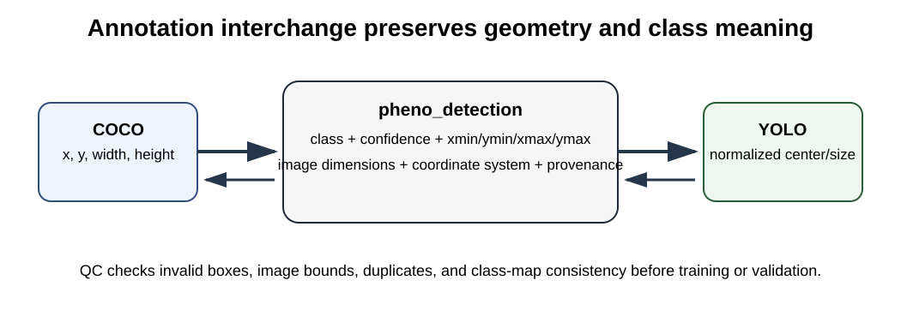

OmniPhenoR Annotation Interchange: COCO, YOLO, and Quality Control
Source:vignettes/v19-coco-and-yolo-datasets.Rmd
v19-coco-and-yolo-datasets.RmdPurpose
Training and validating computer-vision models requires annotation interchange. OmniPhenoR 0.3.0 adds compact COCO-style and YOLO bounding-box converters so that annotation geometry can move between R, training tools, and external models without losing class definitions or image dimensions. The Microsoft COCO data model is a widely used reference for instance-oriented annotations (Lin et al. 2014).

1. YOLO export
d <- pheno_detection(data.frame(
class=c("leaf","flower"),
confidence=c(1,1),
xmin=c(10,70), ymin=c(20,30),
xmax=c(50,95), ymax=c(80,60)
))
labels <- pheno_to_yolo(
d,
image_width=120,
image_height=100,
class_map=c("leaf","flower")
)
labels
#> [1] "0 0.25000000 0.50000000 0.33333333 0.60000000"
#> [2] "1 0.68750000 0.45000000 0.20833333 0.30000000"YOLO coordinates are normalized center-x, center-y, width, height. They cannot be interpreted without the image dimensions and class map.
2. YOLO import and round trip
back <- pheno_from_yolo(
labels,
image_width=120,
image_height=100,
class_map=c("leaf","flower")
)
back
#> <pheno_detection>
#> objects: 2
#> engine: yolo_format
#> classes: flower, leafRound-trip tests are included in the package test suite because coordinate-format errors are easy to make and can silently damage a training dataset.
3. COCO-style export
co <- pheno_to_coco(
d,
image_id=1,
image_width=120,
image_height=100
)
names(co)
#> [1] "images" "categories" "annotations"
co$annotations[[1]]
#> $id
#> [1] 1
#>
#> $image_id
#> [1] 1
#>
#> $category_id
#> [1] 2
#>
#> $bbox
#> [1] 10 20 40 60
#>
#> $area
#> [1] 2400
#>
#> $iscrowd
#> [1] 0
#>
#> $score
#> [1] 1Writing JSON requires the optional jsonlite package:
pheno_to_coco(
d,
image_id=1,
image_width=120,
image_height=100,
file="annotations.json"
)4. COCO import
pheno_from_coco(co)
#> <pheno_detection>
#> objects: 2
#> engine: coco
#> image: 1
#> classes: flower, leafThe 0.3.0 implementation focuses on bounding-box detection interchange. Rich polygon/RLE segmentation should be added only with tests that preserve topology and category semantics.
5. Annotation QC
bad <- pheno_detection(data.frame(
class=c("leaf","leaf"),
confidence=c(1,1),
xmin=c(-5,0), ymin=c(0,0),
xmax=c(105,100), ymax=c(100,100)
))
pheno_annotation_qc(
bad,
image_width=100,
image_height=100
)
#> # A tibble: 1 × 3
#> object_id issue detail
#> <int> <chr> <chr>
#> 1 1 x_out_of_bounds box exceeds image widthCurrent checks include out-of-bounds boxes, tiny/invalid objects, and probable duplicate boxes.
6. Annotation identity
An annotation file should not become disconnected from the biological sample. Maintain an external manifest such as:
| image_id | plot_id | plant_id | organ | date | annotator |
|---|---|---|---|---|---|
| img001 | P01 | plant07 | canopy | 2026-06-12 | A |
| img002 | P01 | plant08 | canopy | 2026-06-12 | B |
The annotation format is only one layer of the scientific dataset.
7. Class-map versioning
Changing class order in YOLO data can silently relabel all annotations. Keep the class map under version control and include a hash in dataset metadata.
For example:
0 leaf
1 flower
2 fruitis not equivalent to:
0 flower
1 leaf
2 fruitEven though the label files remain syntactically valid.
8. Leakage control
When creating train/validation/test splits, split at the correct biological level. Repeated images of the same plant should not be allowed to cross partitions merely because annotation files have unique filenames.
A recommended manifest contains at least:
image_id
plant_id
plot_id
environment_id
treatment
acquisition_sessionThen use the group-aware split infrastructure introduced in 0.2.0.
9. Common mistakes
- Forgetting image dimensions when converting normalized coordinates.
- Using one-based class IDs in a zero-based YOLO file.
- Reordering the class map after labels have been generated.
- Treating JSON validity as annotation validity.
- Splitting images rather than biological groups.
- Ignoring duplicate annotations near tile boundaries.
10. Dataset release checklist
Before a dataset is frozen:
- run annotation QC;
- verify all images have expected labels;
- verify class-map consistency;
- check image dimensions;
- inspect a random visual sample;
- freeze the biological split manifest;
- hash annotation files;
- record annotation software and version;
- record exclusion rules;
- preserve the original annotation export.
Final perspective
Interchange formats should simplify collaboration, not erase scientific identity. OmniPhenoR treats COCO and YOLO as transport layers around canonical objects whose classes, dimensions, provenance, and biological grouping remain explicit.